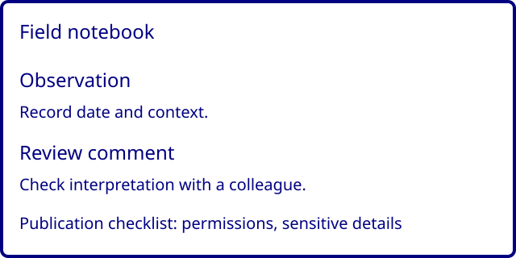

Keep field notes easy to review
This fictional notebook example groups observations, review comments and a publication checklist. It makes no claim about a real product.

An example workflow
- Record an observation with its date and context.
- Ask a colleague to review the observation.
- Check permissions and sensitive details before publication.
The example includes no signup, price, purchase flow or third-party analytics.